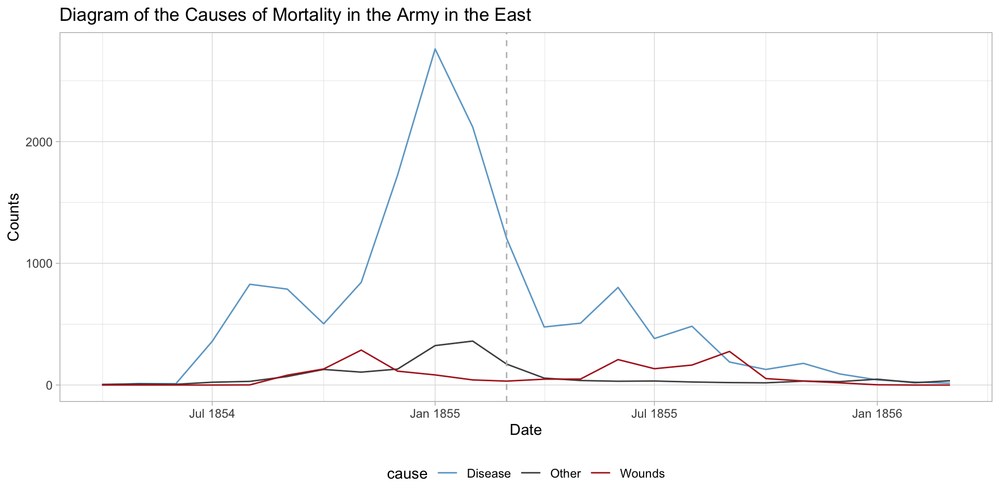

Visualizing Trends
2025-03-26
Announcements, previously, and today…
HW6 is due Wednesday March 26th by 11:59 PM ET
You have Lab 8 this Friday
We do NOT have in-class lecture on Wednesday! I will post a recording
Common workflow:
Reduce the data to a few “useful” dimensions
Plot those “useful” dimensions
Last two classes:
Reduce the data by summarizing pairs of subjects with one distance.
Visualize distances using multi-dimensional scaling or dendrograms.
How can we reduce the data without distances?
Principal Component Analysis (PCA) is by far the most popular way
Longitudinal data and time series structure
- Consider a single observation measured across time
| Variable | \(T_1\) | \(T_2\) | \(\dots\) | \(T_J\) |
|---|---|---|---|---|
| \(X_1\) | \(x_{11}\) | \(x_{12}\) | \(\dots\) | \(x_{1J}\) |
| \(X_2\) | \(x_{21}\) | \(x_{22}\) | \(\dots\) | \(x_{2J}\) |
| \(\vdots\) | \(\vdots\) | \(\vdots\) | \(\dots\) | \(\vdots\) |
| \(X_P\) | \(x_{P1}\) | \(x_{P2}\) | \(\dots\) | \(x_{PJ}\) |
With \(N\) observations we have \(N\) of these matrices
Time may consist of regularly spaced intervals
- For example, \(T_1 = t\), \(T_2 = t + h\), \(T_3 = t + 2h\), etc.
Irregularly spaced intervals, then work with the raw \(T_1,T_2,...\)
Example: Statistics PhDs by year
Example: Statistics PhDs by year
stat_phd_year_summary |>
ggplot(aes(x = year, y = n_phds)) +
geom_point() +
scale_x_continuous(breaks = unique(stat_phd_year_summary$year),
labels = unique(stat_phd_year_summary$year)) +
theme_light() +
labs(x = "Year", y = "Number of PhDs", title = "Number of Statistics-related PhDs awarded over time")Add lines to emphasize order
stat_phd_year_summary |>
ggplot(aes(x = year, y = n_phds)) +
geom_point() +
geom_line() +
scale_x_continuous(breaks = unique(stat_phd_year_summary$year),
labels = unique(stat_phd_year_summary$year)) +
theme_light() +
labs(x = "Year", y = "Number of PhDs",
title = "Number of Statistics-related PhDs awarded over time")
Drop points to emphasize trends
stat_phd_year_summary |>
ggplot(aes(x = year, y = n_phds)) +
geom_line() +
scale_x_continuous(breaks = unique(stat_phd_year_summary$year),
labels = unique(stat_phd_year_summary$year)) +
theme_light() +
labs(x = "Year", y = "Number of PhDs",
title = "Number of Statistics-related PhDs awarded over time")
Can fill the area under the line
stat_phd_year_summary |>
ggplot(aes(x = year, y = n_phds)) +
geom_area(fill = "darkblue", alpha = 0.5) +
geom_line() +
scale_x_continuous(breaks = unique(stat_phd_year_summary$year),
labels = unique(stat_phd_year_summary$year)) +
theme_light() +
labs(x = "Year", y = "Number of PhDs",
title = "Number of Statistics-related PhDs awarded over time")Several time series? Do NOT only use points
stats_phds |>
ggplot(aes(x = year, y = n_phds, color = field)) +
geom_point() +
scale_x_continuous(breaks = unique(stat_phd_year_summary$year),
labels = unique(stat_phd_year_summary$year)) +
theme_light() +
theme(legend.position = "bottom", legend.text = element_text(size = 7)) +
labs(x = "Year", y = "Number of PhDs",
title = "Number of Statistics-related PhDs awarded over time",
color = "Field")Several time series? Use lines!
stats_phds |>
ggplot(aes(x = year, y = n_phds, color = field)) +
geom_line() +
scale_x_continuous(breaks = unique(stat_phd_year_summary$year),
labels = unique(stat_phd_year_summary$year)) +
theme_light() +
theme(legend.position = "bottom") +
labs(x = "Year", y = "Number of PhDs", color = "Field",
title = "Number of Statistics-related PhDs awarded over time")Using ggrepel to directly label lines
stats_phds_2017 <- stats_phds |> filter(year == 2017)
library(ggrepel)
stats_phds |>
ggplot(aes(x = year, y = n_phds, color = field)) +
geom_line() +
# Add the labels:
geom_text_repel(data = stats_phds_2017, aes(label = field),
size = 3,
# Drop the segment connection:
segment.color = NA,
# Move labels up or down based on overlap
direction = "y",
# Try to align the labels horizontally on the left hand side
hjust = "left") +
scale_x_continuous(breaks = unique(stat_phd_year_summary$year),
labels = unique(stat_phd_year_summary$year),
# Update the limits so that there is some padding on the
# x-axis but don't label the new maximum
limits = c(min(stat_phd_year_summary$year),
max(stat_phd_year_summary$year) + 3)) +
theme_light() +
theme(legend.position = "none") +
labs(x = "Year", y = "Number of PhDs", color = "Field",
title = "Number of Statistics-related PhDs awarded over time")Using ggrepel to directly label lines
Using gghighlight instead
library(gghighlight)
stats_phds |>
ggplot(aes(x = year, y = n_phds, color = field)) +
geom_line() +
gghighlight() +
scale_x_continuous(breaks = unique(stat_phd_year_summary$year),
labels = unique(stat_phd_year_summary$year)) +
theme_light() +
theme(legend.position = "none") +
labs(x = "Year", y = "Number of PhDs", color = "Field",
title = "Number of Statistics-related PhDs awarded over time")Using gghighlight instead
Using gghighlight instead
library(gghighlight)
stats_phds |>
ggplot(aes(x = year, y = n_phds, color = field)) +
geom_line() +
gghighlight(line_label_type = "sec_axis") +
scale_x_continuous(breaks = unique(stat_phd_year_summary$year),
labels = unique(stat_phd_year_summary$year)) +
theme_light() +
theme(legend.position = "none") +
labs(x = "Year", y = "Number of PhDs", color = "Field",
title = "Number of Statistics-related PhDs awarded over time")Using gghighlight instead

How do we plot many lines? NOT LIKE THIS!
phd_field |>
ggplot(aes(x = year, y = n_phds, color = field)) +
geom_line() +
scale_x_continuous(breaks = unique(stat_phd_year_summary$year),
labels = unique(stat_phd_year_summary$year)) +
theme_light() +
theme(legend.position = "none") +
labs(x = "Year", y = "Number of PhDs", color = "Field",
title = "Number of Statistics-related PhDs awarded over time")How do we plot many lines? NOT LIKE THIS!

Instead we highlight specific lines
phd_field |>
filter(!(field %in% c("Biometrics and biostatistics", "Statistics (mathematics)"))) |>
ggplot() +
# Add the background lines - need to specify the group to be the field
geom_line(aes(x = year, y = n_phds, group = field),
color = "gray", size = .5, alpha = .5) +
# Now add the layer with the lines of interest:
geom_line(data = filter(phd_field,
# Note this is just the opposite of the above since ! is removed
field %in% c("Biometrics and biostatistics",
"Statistics (mathematics)")),
aes(x = year, y = n_phds, color = field),
# Make the size larger
size = .75, alpha = 1) +
scale_x_continuous(breaks = unique(stat_phd_year_summary$year),
labels = unique(stat_phd_year_summary$year)) +
theme_light() +
theme(legend.position = "bottom",
# Drop the panel lines making the gray difficult to see
panel.grid = element_blank()) +
labs(x = "Year", y = "Number of PhDs", color = "Field",
title = "Number of Statistics-related PhDs awarded over time")Instead we highlight specific lines
Or you can use gghighlight instead
phd_field |>
ggplot(aes(x = year, y = n_phds, color = field)) +
geom_line() +
gghighlight(field %in% c("Biometrics and biostatistics", "Statistics (mathematics)"),
line_label_type = "sec_axis") +
scale_x_continuous(breaks = unique(stat_phd_year_summary$year),
labels = unique(stat_phd_year_summary$year)) +
theme_light() +
theme(legend.position = "none") +
labs(x = "Year", y = "Number of PhDs", color = "Field",
title = "Number of Statistics-related PhDs awarded over time")Or you can use gghighlight instead
What about Nightingale’s rose diagram?

What about Nightingale’s rose diagram?

What about displaying lines instead?
Recap and next steps
Discussed various aspects of visualizing trends
When visualizing many lines, often useful to consider highlighting a small subset
HW6 is due TONIGHT and you have lab on Friday!
I will not have office hours today
Next time: Time series, autocorrelation, and seasonal decomposition
Recommended reading: CW CH 13 Visualizing time series and other functions of an independent variable, CW CH 14 Visualizing trends